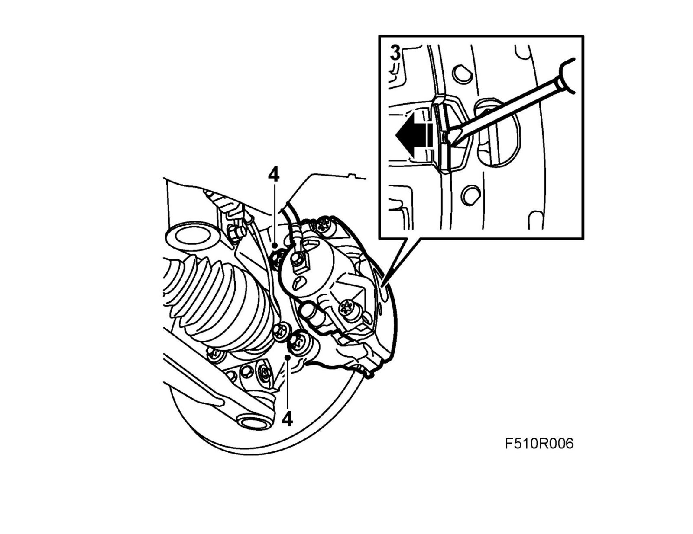
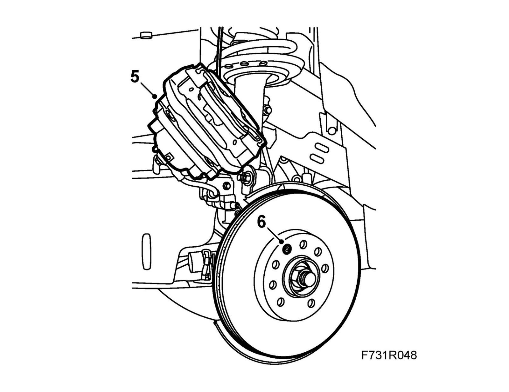
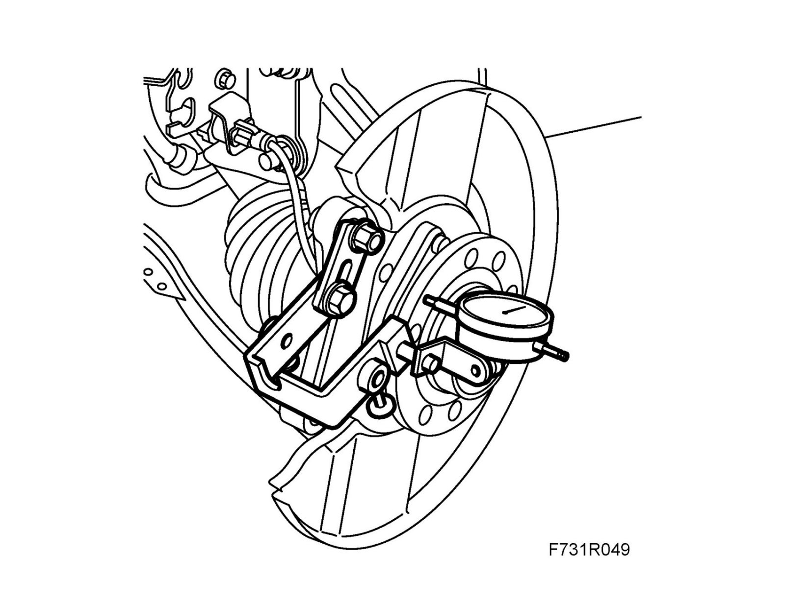
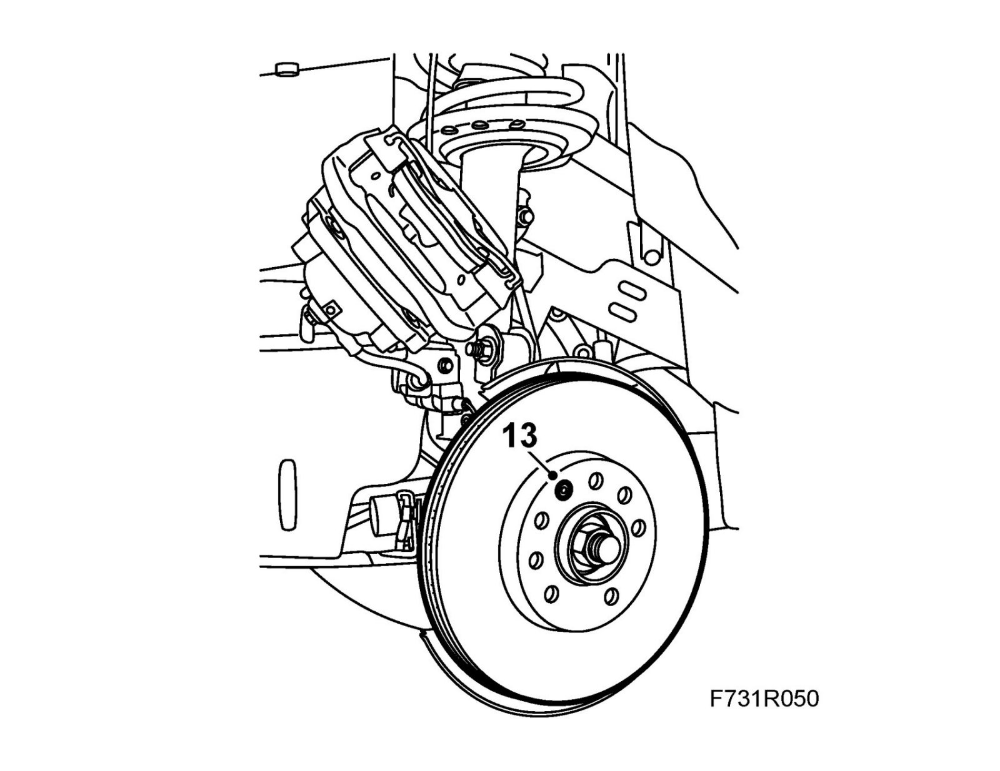
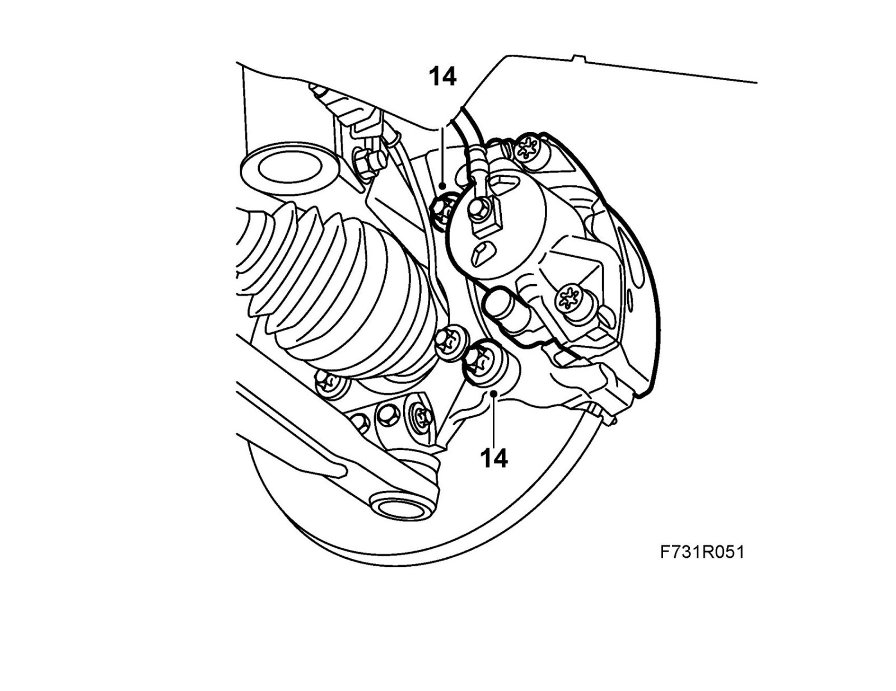

Wheel Hub: Testing and Inspection
Control measuring axial hub runout, front wheels1. Raise the car and remove the front wheels.
2. Begin by performing a control measurement on one side.
3. Press in the piston by prising with a screwdriver against the brake pads.

4. Remove the brake caliper retaining bolts and lift off the caliper.
Note
Inspect the wheel sensor cable for damage.
5. Suspend the caliper with straps.

6. Remove the brake disc locking bolt.
7. Lift off the brake disc.
8. Fit 89 96 639 Gauge, brake disc on the upper mounting lug of the brake caliper with an M10 nut and bolt. Fit a 83 90 288 Holder, dial gauge and 78 40 622 Dial indicator.

9. Rotate the hub and check the runout (the value between the highest and lowest reading).
If the runout exceeds 0.03 mm, replace the hub.
Note
The dial gauge should read 0.03-0.05 mm at each bolt hole. This is completely normal.
10. Remove the dial gauge and bracket.
11. If the measured runout values are outside the tolerances, replace the hub, see Wheel hub, front. Wheel Hub, Front
12. Clean the contact surfaces between the hub and the brake disc.
13. Place the brake disc on the hub and fit the brake disc locking bolt.
Tightening torque 7 Nm (5 lbf ft)

14. Fit the brake caliper, lock the bolt threads with 74 96 268 Thread locking adhesive.
Tightening torque 210 Nm +30° (155 lbf ft +30°)

15. Fit the wheel.
16. Repeat the measurement method for the other front wheel.
17. Lower the car and press the brake pedal in order to press out the brake pads.